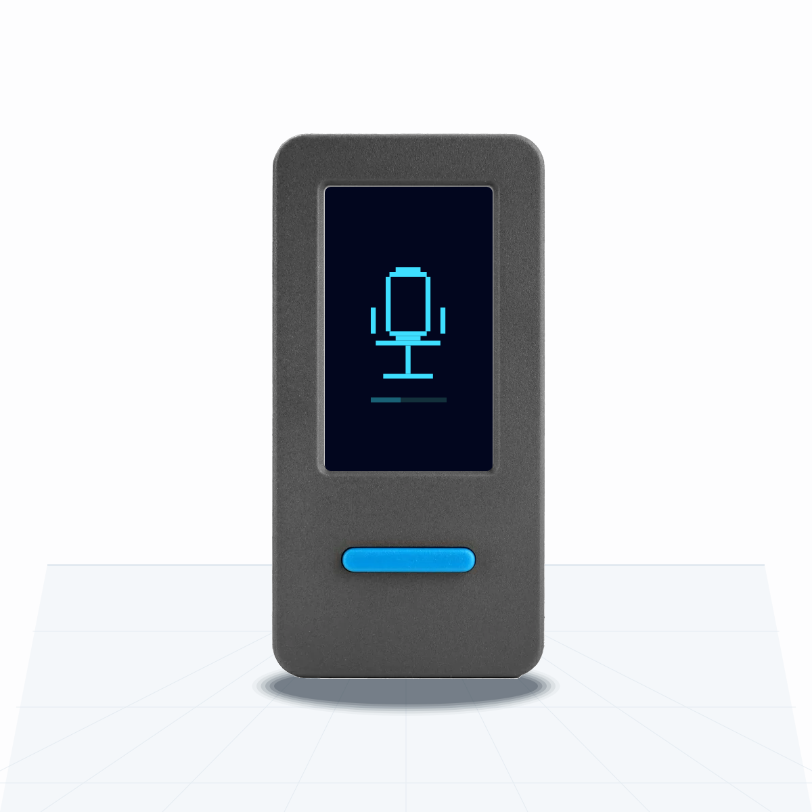
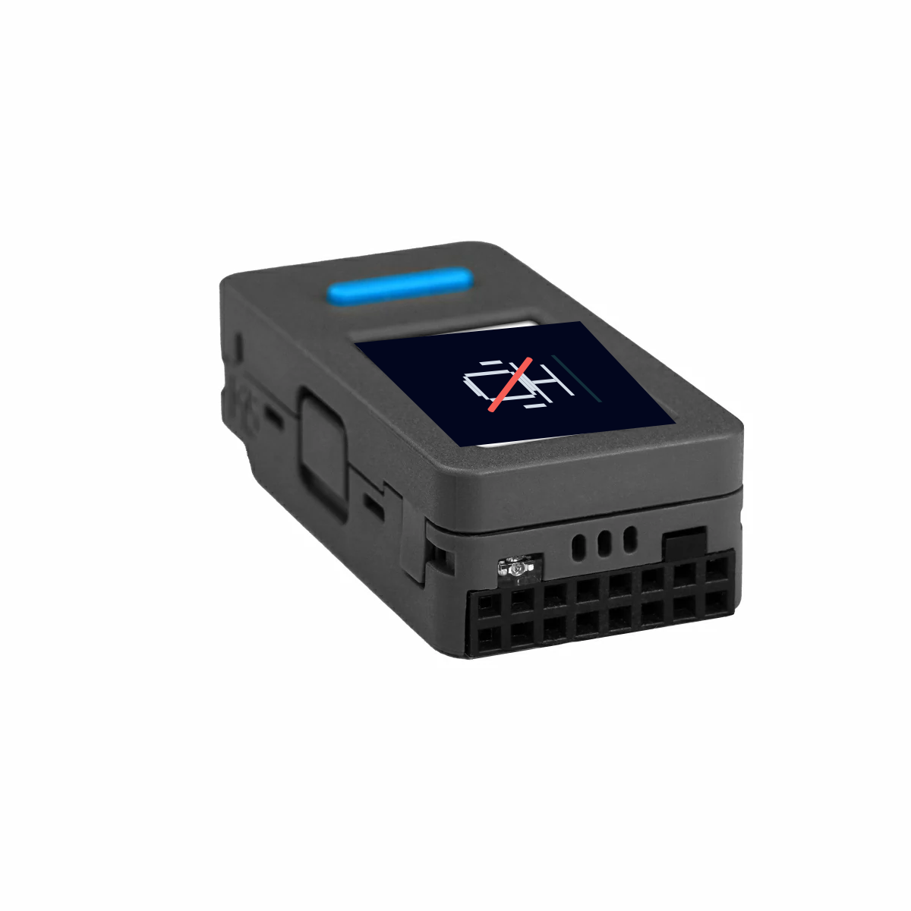

VoxStick 网页烧录器
直接从浏览器把 VoxStick 固件刷进 M5Stack StickS3。普通用户不需要安装 ESP-IDF、Python 或 esptool。



烧录完成后可能不会自动重启。请拔掉 USB，双击侧边键关机，再插回 USB。
故障恢复
- 看不到串口：换一根 USB-C 数据线，确认浏览器是桌面版 Chrome/Edge。
- 仍然看不到串口：重新长按侧边键约 2 秒，绿色 LED 闪烁后松开。
- 已运行 VoxStick 固件时，也可以执行
bash tools/trigger-download.sh进入下载模式。 - 命令行兜底：
esptool.py --chip esp32s3 write_flash 0x0 voxstick-full.bin
真机图片和按键说明参考 M5Stack StickS3 官方文档。 项目源码： github.com/openbrt/voxstick